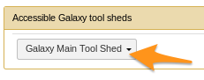
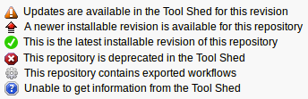
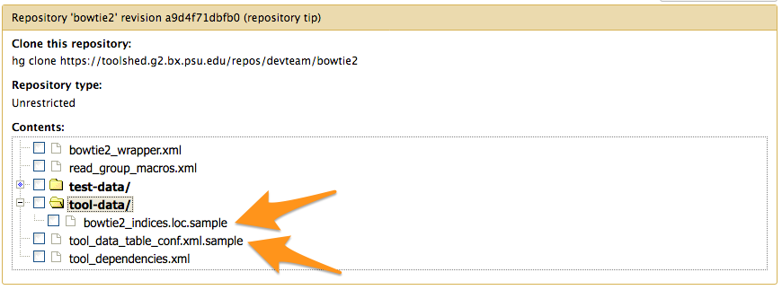
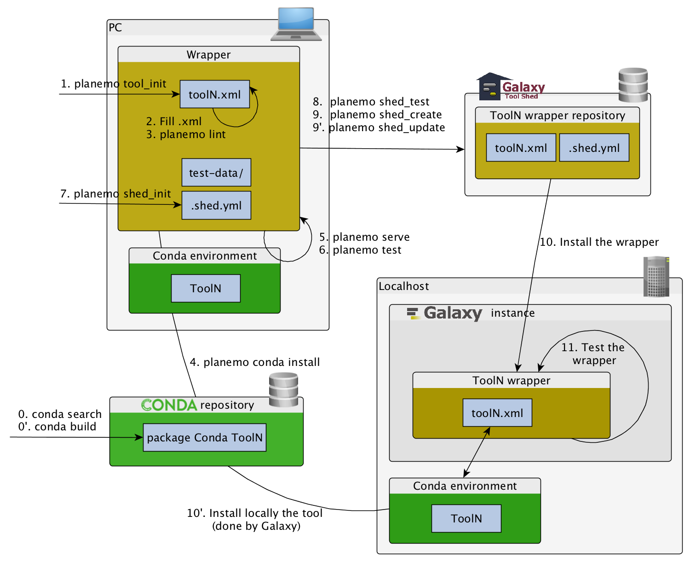

Tool Shed: sharing Galaxy tools
Contributors
Questions
What is a Tool Shed?
How to install tools and workflows from a Tool Shed into a Galaxy instance?
What are the Tool Shed repository types?
How to publish with Planemo?
Objectives
Discover what is a Tool Shed
Be able to install tools and workflows from a Tool Shed into a Galaxy instance
Be able to publish tools with Planemo
1. What is a Tool Shed?
= Galaxy App Store
= Galaxy App Store
- Galaxy tools
Recipes for installing and compiling tools,- Data Managers,
- Custom datatypes,
- Exported workflows.
= Galaxy App Store
- For Galaxy administrators, facilitates:
- installing/updating tools
- For tool developers, facilitates:
- sharing of Galaxy utilities
- versioning
Available Tool Sheds
- Galaxy community Tool Shed -> Main Tool Shed
- Galaxy community test Tool Shed -> Sandbox for testing
- List of public Tool Sheds
Tool Shed interface
Example of tool
2. Installing tools from a Tool Shed
Connect your Galaxy to a Tool Shed
- Only for third party toolsheds (Main and Test by default)
- Add
<tool_shed />block inconfig/tool_sheds_conf.xml - Restart Galaxy
Install a tool from the Tool Shed
- Go to the admin interface and click on “Search Tool Shed”
- Select a Tool Shed

Install a tool from the Tool Shed
- Search your tool

Install a tool from the Tool Shed
- Types of repository</span>
- Tools (
$name) - Tool suites (
suite_$name) - Tool dependencies (
package_$name_$version) (gradually removed, replaced by Conda dependencies)
- Tools (
Install a tool from the Tool Shed
- Install the tool
Install a tool from the Tool Shed
- Install the tool
- Selecting Tool Shed AND conda will make Galaxy to install both
- Recommended: use conda
Install a tool from the Tool Shed
- Check
Manage installed tools
- Admin > Manage installed tools 
Manage installed tools
- Click on the name of a tool
- Manage and browse the repository
Tips: How to install workflows
How to install a workflow?
- Admin > Search Tool Shed
- Search the workflow
- Tools can come with the workflow if they are not yet installed
How to install a workflow?
- No workflow?
How to install a workflow?
- Click on the imported workflow
How to install a workflow?
- Click on the workflow at the bottom of the “Contents of this repository” section
How to install a workflow?
- Repository Actions > Import workflow to Galaxy
How to install a workflow?
- Done!
3. Tool Shed repository types
3.1 Tool with dependencies
Tool with dependencies
3.2 Tool suite
Group of related repositories
Tool suite
- Works but no way to install a single tool
Tool suite
- One repository per individual tool
- A special ‘Tool suite’ repository listing the individual repositories
Tool suite
- relationship between a dependent repository and one or more required repository (tools, datatypes, workflows,…)
- -> One XML file ```xml <?xml version=”1.0”?>
No need to write it yourself, Planemo does it for you
---
### Tool suite

---
### 3.3 Workflow
---
### Workflow

- A succession of tools to perform a complete analysis
---
### Workflow
- In galaxy

---
### Workflow

- You get a file: Galaxy-Workflow-NAME.ga
---
### Workflow
- You have your file Galaxy-Workflow-NAME.ga
- How to automatically install the tools used in the workflow?
- -> `repository_dependencies.xml`
```xml
<?xml version="1.0"?>
<repositories description="Phylogeny workflow">
<repository name="suite_phylogeny" owner="galaxy" />
</repositories>
Workflow
Workflow
- Everything must be on the same toolshed
Tips
What about tools working with *.loc files or new datatypes
Tools with *.loc files or new datatypes
- add them to the Tool Shed repository.
*.locfiles anddatatypesfiles should be provided as*.samplefile in atool-datadirectory.tool-data/*.loc.samplefiles come along withtool_data_table_conf.xml.sample.
Their content or the file themselves are put to the right location on tool set up.
Tools with *.loc files or new datatypes

tool_data_table_conf.xml.sample
<tables>
<!-- Locations of indexes in the Bowtie2 mapper format -->
<table name="bowtie2_indexes" comment_char="#">
<columns>value, dbkey, name, path</columns>
<file path="tool-data/bowtie2_indices.loc" />
</table>
</tables>
On install, the content of the file and the right
path to the *.loc file is added to shed_tool_data_table_conf.xml
4. Publishing with Planemo
warning There are automated ways to publish to a ToolShed using GitHub and Continuous Integration
Check out these slides, “Publishing tools” section
Configure the target Tool Shed
planemo config_init
- Creates
.planemo.ymlfile in your home directory:
## Planemo Global Configuration File.
## Everything in this file is completely optional - these values can all be
## configured via command line options for the corresponding commands.
## [...]
sheds:
toolshed:
#key: "<TODO>"
#email: "<TODO>"
#password: "<TODO>"
testtoolshed:
#key: "<TODO>"
#email: "<TODO>"
#password: "<TODO>"
local:
#key: "<TODO>"
#email: "<TODO>"
#password: "<TODO>"
Configure the target Tool Shed
- Add your Tool Shed API key in
.planemo.yml
## Planemo Global Configuration File.
## Everything in this file is completely optional - these values can all be
## configured via command line options for the corresponding commands.
## [...]
sheds:
toolshed:
key: "xxxxxxxxxmytoolshedAPIkeyxxxxxxx"
#email: "<TODO>"
#password: "<TODO>"
testtoolshed:
#key: "<TODO>"
#email: "<TODO>"
#password: "<TODO>"
local:
#key: "<TODO>"
#email: "<TODO>"
#password: "<TODO>"
Configure repository
planemo shed_init --name="tandem_repeats_finder_2"
--owner="gandres"
--description="Tandem Repeats Finder description"
--long_description="A long long description."
--category="Sequence Analysis"
[--remote_repository_url=<URL to .shed.yml on github>]
[--homepage_url=<Homepage for tool.>]
- Creates
.shed.ymlfile in the current repository (tool repository):
categories: [Sequence Analysis]
description: Tandem Repeats Finder description
long_description: A long long description.
<span id="tandem_repeats_finder_2"><i class="fas fa-link" aria-hidden="true"></i> tandem_repeats_finder_2</span>
owner: gandres
Configure repository
Naming conventions
| Repository Type | Recommended Name | Examples |
|---|---|---|
| Data Managers | data_manager_$name |
data_manager_bowtie2 |
| Packages | package_$name_$version |
package_aragorn_1_2_36 |
| Tool Suites | suite_$name |
suite_samtools |
| Tools | $name |
stringle, bowtie2 |
</small> Planemo will determine the repository type based on these conventions
Configure repository
-
Tools and tool suite
.shed.yml: implicitly define repositories for each individual tool in the directory and build a suite for those tools. -
Example:
trinity/.shed.yml
[...]
auto_tool_repositories:
name_template: ""
description_template: " (from the Trinity tool suite)"
suite:
name: "suite_trinity"
description: Trinity tools to assemble transcript sequences from Illumina RNA-Seq data.
Check
planemo shed_lint --tools
Linting repository […]/tandem_repeats_finder
Applying linter expansion... CHECK
.. INFO: Included files all found.
Applying linter tool_dependencies_xsd... CHECK
.. INFO: tool_dependencies.xml found and appears to be valid XML
Applying linter tool_dependencies_actions... CHECK
.. INFO: Parsed tool dependencies.
Applying linter repository_dependencies... CHECK
.. INFO: No repository_dependencies.xml, skipping.
Applying linter shed_yaml... CHECK
.. INFO: .shed.yml found and appears to be valid YAML.
Applying linter readme... CHECK
.. INFO: No README found skipping.
+Linting tool […]/tandem_repeats_finder/tandem_repeats_finder_wrapper.xml
[…]
Create repository
planemo shed_create --shed_target testtoolshed
- Don’t forget –shed_target. Default is main toolshed
Create repository
planemo shed_create --shed_target testtoolshed
Repository created
cd '[…]/tandem_repeats_finder' && git rev-parse HEAD
Repository tandem_repeats_finder_2 updated successfully.
Update repository
planemo shed_diff --shed_target testtoolshed
wget -q --recursive -O - 'https://testtoolshed.g2.bx.psu.edu/repository/download?repository_id=6306166e4da9a8bf&changeset_revision=default&file_type=gz' | tar -xzf - -C /tmp/tool_shed_diff_DMcOrR/_testtoolshed_ --strip-components 1
mkdir "/tmp/tool_shed_diff_DMcOrR/_local_"; tar -xzf "/tmp/tmp5ousfg" -C "/tmp/tool_shed_diff_DMcOrR/_local_"; rm -rf /tmp/tmp5ousfg
cd "/tmp/tool_shed_diff_DMcOrR"; diff -r _local_ _testtoolshed_
diff -r _local_/tandem_repeats_finder.xml _testtoolshed_/tandem_repeats_finder.xml
41d40
< <param name="fileout_label2" type="text" value="Unused" label="none" help="Output name for files" />
- The repository needs to be updated
Update repository
planemo shed_update --check_diff --shed_target testtoolshed
wget -q --recursive -O - 'https://testtoolshed.g2.bx.psu.edu/repository/download?repository_id=6306166e4da9a8bf&changeset_revision=default&file_type=gz' | tar -xzf - -C /tmp/tool_shed_diff_DMcOrR/_testtoolshed_ --strip-components 1
mkdir "/tmp/tool_shed_diff_DMcOrR/_local_"; tar -xzf "/tmp/tmp5ousfg" -C "/tmp/tool_shed_diff_DMcOrR/_local_"; rm -rf /tmp/tmp5ousfg
cd "/tmp/tool_shed_diff_DMcOrR"; diff -r _local_ _testtoolshed_
diff -r _local_/tandem_repeats_finder.xml _testtoolshed_/tandem_repeats_finder.xml
41d40
< <param name="fileout_label2" type="text" value="Unused" label="none" help="Output name for files" />
Repository tandem_repeats_finder updated successfully.
Repository metadata updated.
- The repository has been updated
Update repository
planemo shed_update --check_diff --shed_target testtoolshed
- The repository has been updated

Publishing to the Tool Shed


Command-line utilities to assist in building and publishing Galaxy tools.



Checklist (3/3)
- Initiate the
.shed.ymlfile withplanemo shed_init - Create the repository on ToolShed with
planemo shed_create - Install and test the wrapper on a Galaxy instance
- Improve the wrapper and push modification on toolshed
planemo shed_update
References
Hands-on
The goal
Publish your tool (seqtk_seq) in your local toolshed with Planemo
Step 1: Start and configure your toolshed
- Start your toolshed (in galaxy home directory):
./run_tool_shed.sh - Toolshed available at
http://localhost:9009
Step 2: Use planemo to publish your tool
Step 2: Use planemo to publish your tool
planemo config_init
- Creates file
.planemo.ymlin your home directory.
[...] local:
#key: "<TODO>"
email: "galaxy@localhost.fr"
password: "azerty"
planemo shed_init --name=seqtk_seq --owner=galaxy --description="common transformation of FASTA/Q" --category="Fasta Manipulation"
planemo shed_lint .
planemo shed_create --shed_target local
Step 3: Update your tool and then use planemo to update your tool on the Tool Shed
Step 3: Update your tool and then use planemo to update your tool on the Tool Shed
planemo shed_diff --shed_target local
planemo shed_update --check_diff --shed_target local
Key Points
- Use Planemo
- Contribute to the Main Tool Shed
Thank you!
This material is the result of a collaborative work. Thanks to the Galaxy Training Network and all the contributors! Tutorial Content is licensed under
Creative Commons Attribution 4.0 International License.
Tutorial Content is licensed under
Creative Commons Attribution 4.0 International License.